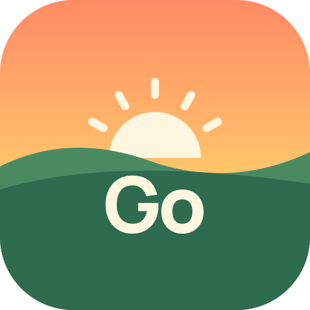

GoSignal
El tiempo, traducido a una pregunta: ¿puedo salir?
Por qué existe
Todas las apps del tiempo me daban muchos números y ninguna respuesta. Cada vez que quería salir a hacer deporte, acababa mirando tres apps, comparando lluvia, viento y temperatura hora a hora y haciendo cuentas mentales para encontrar un hueco.
GoSignal mira la previsión por ti y te dice, de un vistazo, cuándo es buen momento para salir y por qué.
Qué hace
- Semáforo por horasCada hora en verde, ámbar o rojo según tu actividad: ciclismo, running, paseo o monte, o tu propio perfil.
- Ventanas de buen tiempoTe avisa cuando hay varias horas buenas seguidas: «Tarde con ventana de 17:00 a 20:00».
- MeteogramaTemperatura, lluvia, viento y nubes hora a hora, deslizando por los próximos 7 días.
- Widgets¿Puedo salir?, meteograma, ahora y próximos días, con tamaño de texto, tema y color a tu gusto.
- Tus eventos, con su tiempoConecta el calendario y verás la cuenta atrás de tus próximos eventos y el tiempo que hará ese día en ese sitio.
- Sin cuentas ni anunciosTodo se queda en tu móvil. Gratis.
Preguntas frecuentes
¿Cómo destaco un evento importante?
Escribe #objetivo en la descripción o notas del evento en tu calendario. GoSignal lo mostrará destacado, con la etiqueta «OBJETIVO». El hashtag se puede cambiar en la configuración de cada widget.
¿Puedo tener un widget solo para algunos eventos?
Sí. Cada widget de eventos tiene sus propios filtros: calendarios, hashtags (por ejemplo #carrera o #pesca en la descripción), palabras del título, tipo de evento y horizonte. Puedes tener uno para tus carreras y otro para tus días de pesca.
¿Con cuánta antelación sale el tiempo de un evento?
Hora a hora cuando falta una semana o menos, y como tendencia orientativa hasta dos semanas antes. Si el evento está más lejos, verás la fecha a partir de la cual aparecerá la previsión.
¿Por qué las horas de noche salen en gris?
Si tu perfil no sale de noche, esas horas no se evalúan. Si sí sales, activa «Salgo también de noche» en el perfil y se evaluarán con colores más oscuros.
¿De dónde salen los datos del tiempo?
De un servicio de datos meteorológicos abierto, acreditado al pie de esta página, que combina modelos de servicios meteorológicos nacionales como ECMWF, DWD, Météo-France y AEMET. GoSignal te ayuda a decidir, pero no sustituye a los avisos oficiales.
Privacidad
GoSignal no tiene servidores propios ni recoge datos personales. Lee aquí la política de privacidad completa.